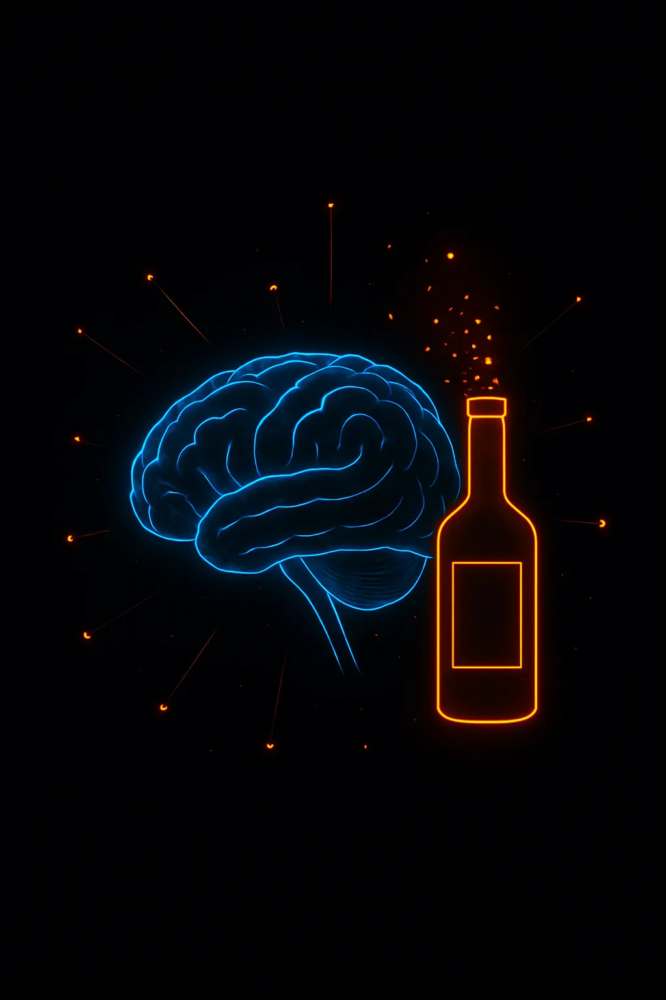
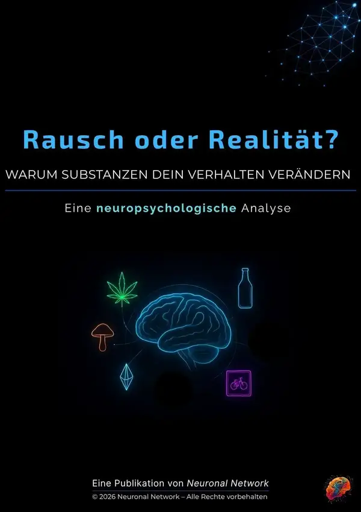

<!DOCTYPE html>
<html lang="de">
<head>
    <script async src="https://www.googletagmanager.com/gtag/js?id=G-1BSY9Q4Z0W"></script>
    <script>
      window.dataLayer = window.dataLayer || [];
      function gtag(){dataLayer.push(arguments);}
      gtag('js', new Date());

      gtag('config', 'G-1BSY9Q4Z0W');
    </script>

    <script>
    !function(f,b,e,v,n,t,s)
    {if(f.fbq)return;n=f.fbq=function(){n.callMethod?
@@ -396,195 +387,4 @@
            color: #ffffff;
        }
        .footer-link:active {
            opacity: 0.7;
        }
    </style>
</head>
<body>

    <div class="content-container">

        

        <h1 class="hero-title">Gehirn auf 2.0 Promille</h1>
        <p class="hero-subtitle">Warum sich dein Verhalten nicht zufällig verändert</p>

        <p>Die vollständige wissenschaftliche Analyse zeigt, welche neurochemischen Mechanismen hinter diesen Veränderungen stehen –<br>und warum Wahrnehmung, Entscheidungen und Verhalten sich systematisch verändern.</p>

        <p class="highlight-blue">Alkohol: „Enthemmtes Bewusstsein“</p>

        <div class="mechanism-block">
            <div class="mechanism-title">1. Verminderung der GABA-Aktivität</div>
            <p>Alkohol verstärkt die Wirkung von GABA (<i>Gamma-Aminobuttersäure</i>), einem hemmenden Botenstoff im zentralen Nervensystem, wodurch die Aktivität der Nervenzellen gedämpft wird.</p>
            <p><span class="bold-text">Die Folge davon ist:</span> Entspannung, sinkende Hemmschwellen und ein lockeres Verhalten.</p>
            <p>Hierdurch fühlen sich Menschen sozial offener, spontaner und weniger gehemmt in ihrer Interaktion mit anderen Personen.</p>
            <div class="source-text">(Koob & Volkow, 2010)</div>
        </div>

        <div class="mechanism-block">
            <div class="mechanism-title">2. Hemmung der Glutamat-Aktivität</div>
            <p>Alkohol reduziert die Wirkung von Glutamat, das normalerweise Erregung und Informationsverarbeitung im Gehirn fördert.</p>
            <p><span class="bold-text">Die Folge davon ist:</span> Die bewusste Steuerung des Verhaltens (<i>kognitive Kontrolle</i>) lässt nach, das Denken wird träge und man hinterfragt das eigene Handeln kaum noch kritisch.</p>
            <p>Hierdurch reagieren Menschen impulsiver und treffen Entscheidungen oft ohne tiefere Abwägung.</p>
            <div class="source-text">(Lovinger, 1997)</div>
        </div>

        <p class="conclusion-text">Die vollständige Analyse zeigt die neurochemischen Prozesse aller Substanzen im Detail – <br>
          und wie sie dein Verhalten systematisch beeinflussen.<br></p>

        <p class="subtitle-orange">Neuropsychologische Analyse</p>
        <p>Strukturierte Einordnung der Mechanismen hinter veränderten Bewusstseinszuständen.</p>

        <div class="meta-container">
            
            <div class="cover-facts-left">
                · 26 Seiten Analyse<br>
                · 27 wissenschaftliche Quellen
            </div>
        </div>

        <div class="toc-section">
            <div class="toc-main-title">Kapitelübersicht</div>

            <div class="toc-block">
                <div class="toc-chapter"><span class="toc-chapter-num">01</span> LSD: Erweitertes Bewusstsein</div>
                <div class="toc-sub-items">· Wirkung auf das Bewusstsein<br>· Neuropsychologische Mechanismen<br>· Bewusstseinseffekte</div>
            </div>

            <div class="toc-block">
                <div class="toc-chapter"><span class="toc-chapter-num">02</span> Psilocybin: Introspektives Bewusstsein</div>
                <div class="toc-sub-items">· Wirkung auf das Bewusstsein<br>· Neuropsychologische Mechanismen<br>· Bewusstseinseffekte</div>
            </div>

            <div class="toc-block">
                <div class="toc-chapter"><span class="toc-chapter-num">03</span> Kokain: Fokussiertes Bewusstsein</div>
                <div class="toc-sub-items">· Wirkung auf das Bewusstsein<br>· Neuropsychologische Mechanismen<br>· Bewusstseinseffekte</div>
            </div>

            <div class="toc-block">
                <div class="toc-chapter"><span class="toc-chapter-num">04</span> Alkohol: Enthemmtes Bewusstsein</div>
                <div class="toc-sub-items">· Wirkung auf das Bewusstsein<br>· Neuropsychologische Mechanismen<br>· Bewusstseinseffekte</div>
            </div>

            <div class="toc-block">
                <div class="toc-chapter"><span class="toc-chapter-num">05</span> Cannabis: Assoziatives Bewusstsein</div>
                <div class="toc-sub-items">· Wirkung auf das Bewusstsein<br>· Neuropsychologische Mechanismen<br>· Bewusstseinseffekte</div>
            </div>

            <div class="toc-block has-divider">
                <div class="toc-chapter"><span class="toc-chapter-num">06</span> Psychoaktive Effekte im Überblick</div>
            </div>

            <div class="toc-block">
                <div class="toc-chapter"><span class="toc-chapter-num">07</span> Literaturverzeichnis</div>
            </div>
        </div>

        <div class="cta-container">
            <a href="https://neuronalnetwork.lemonsqueezy.com/checkout/buy/7069910f-b9b9-42e2-8365-00565b3f0f75" class="cta-button lemonsqueezy-button">Analyse jetzt freischalten</a>
              <span class="cta-subtext">Direkter Zugriff nach dem Kauf.</span>
        </div>

        <div class="section-separator"></div>

        <h2>Warum diese Analyse relevant ist</h2>

        <p>Diese Analyse makes sichtbar, wie neuropsychologische Prozesse in veränderten Bewusstseinszuständen konkret dein Wahrnehmen, Entscheiden und Verhalten beeinflussen.</p>
        <p>Many dieser Veränderungen laufen automatisch ab – oft bevor sie bewusst eingeordnet oder verstanden werden.</p>
        <p class="bold-text">Du fühlst dich nicht zufällig anders.</p>
        <p>In diesen Momenten verändert sich die Art, wie dein Gehirn Informationen verarbeitet und Entscheidungen trifft.</p>

        <p class="subtitle-orange" style="margin-top: 40px;">Diese Analyse zeigt dir:</p>
        <div class="premium-list">
            <div class="premium-list-item">
                <span class="premium-list-bullet">·</span>
                <span>warum sich dein Verhalten in bestimmten Zuständen verändert</span>
            </div>
            <div class="premium-list-item">
                <span class="premium-list-bullet">·</span>
                <span>warum kontrolle in diesen Momenten oft nur eingeschränkt greift</span>
            </div>
            <div class="premium-list-item">
                <span class="premium-list-bullet">·</span>
                <span>wie unterschiedliche neurochemische Systeme dein Erleben beeinflussen</span>
            </div>
            <div class="premium-list-item">
                <span class="premium-list-bullet">·</span>
                <span>warum sich diese Zustände subjektiv oft stabil und „normal“ anfühlen</span>
            </div>
        </div>

        <p class="subtitle-orange" style="margin-top: 35px;">In dieser Analyse erkennst du die Muster von:</p>
        <div class="premium-list">
            <div class="premium-list-item">
                <span class="premium-list-bullet">·</span>
                <span><span class="bold-text">Alkohol</span> &rarr; Enthemmung + Impulsivität</span>
            </div>
            <div class="premium-list-item">
                <span class="premium-list-bullet">·</span>
                <span><span class="bold-text">Cannabis</span> &rarr; Assoziatives Denken + Überverknüpfung</span>
            </div>
            <div class="premium-list-item">
                <span class="premium-list-bullet">·</span>
                <span><span class="bold-text">LSD</span> &rarr; Ich-Distanz + Wahrnehmungsverschiebung</span>
            </div>
            <div class="premium-list-item">
                <span class="premium-list-bullet">·</span>
                <span><span class="bold-text">Kokain</span> &rarr; Fokus + Kontrollillusion</span>
            </div>
            <div class="premium-list-item">
                <span class="premium-list-bullet">·</span>
                <span><span class="bold-text">Psilocybin</span> &rarr; emotionale Verstärkung + Selbstreflexion</span>
            </div>
        </div>

        <p class="conclusion-text" style="margin-top: 35px; margin-bottom: 40px;">
            Du verstehst nicht nur einzelne Mechanismen.<br> 
            Sondern erkennst die wiederkehrenden Muster hinter deinem Verhalten in diesen Zuständen.<br>
        </p>

        <div class="specs-grid">
            <div class="spec-row">
                <div class="spec-label">Umfang</div>
                <div class="spec-value">26 Seiten digitale Fach-Publikation</div>
            </div>
            <div class="spec-row">
                <div class="spec-label">Wissenschaftliche Grundlage</div>
                <div class="spec-value">27 wissenschaftliche Quellen</div>
            </div>
            <div class="specs-row" style="padding: 16px 0; border-bottom: 1px solid #111111;">
                <div class="spec-label">System-Garantie</div>
                <div class="spec-value">Diese Analyse wird laufend erweitert.<br>
                  Alle zukünftigen Versionen sind für Käufer dauerhaft kostenfrei enthalten.<br></div>
            </div>
        </div>

        <div class="price-pitch-box">
            <div class="price-tag">
                Für 15 € <span class="old-price">statt 25 €</span>
            </div>
            <p style="margin: 0; font-size: 15px; line-height: 1.8; color: #ffffff;">
                erhältst du ein strukturiertes Verständnis der neuropsychologischen Mechanismen hinter veränderten Bewusstseinszuständen.<br>
                Du hast viele dieser Effekte wahrscheinlich bereits erlebt.<br>
                Diese Analyse zeigt dir, warum sie entstehen.
            </p>
        </div>

        <div class="cta-container" style="margin-top: 40px;">
            <a href="https://neuronalnetwork.lemonsqueezy.com/checkout/buy/7069910f-b9b9-42e2-8365-00565b3f0f75" class="cta-button lemonsqueezy-button">Analyse jetzt freischalten</a>
            <span class="cta-subtext">Direkter Zugriff nach dem Kauf.</span>
        </div>

        <div class="disclaimer-text">
            Dieser Inhalt dient ausschließlich der wissenschaftlichen Aufklärung und Prävention. Keine medizinische, therapeutische oder praktische Empfehlung.
        </div>

        <div class="footer-links">
            <a href="https://www.dropbox.com/scl/fi/hlhpumtrxczedgx629rb9/Impressum_Neuronal_Network.pdf?rlkey=hgo7p46aa17dv2x1aq1yerjv0&dl=0" class="footer-link" target="_blank">Impressum</a>
            <a href="https://www.dropbox.com/scl/fi/74yjneyai9zbbj52slj4u/Neuronal_Network_Datenschutzerkl-rung.pdf?rlkey=29eq4y37yf5cij3qm336008rp&dl=0" class="footer-link" target="_blank">Datenschutzerklärung</a>
        </div>

    </div>

</body>
</html>
